**La vidéo explore une alternative économique aux abonnements d'intelligence artificielle traditionnels en proposant d'utiliser la plateforme API d'Higgsfield.** Contrairement aux formules mensuelles classiques où les crédits non utilisés sont perdus à la date de renouvellement, ce modèle de paiement à l'usage permet de ne payer que pour ce qui est réellement généré, offrant ainsi une flexibilité accrue pour les utilisateurs aux besoins intermittents ou irréguliers.
**Pour centraliser l'accès à l'ensemble des modèles d'images et de vidéos proposés par Higgsfield, le présentateur démontre comment concevoir une application locale personnalisée.** En combinant le prompt de démarrage rapide fourni par la plateforme avec l'assistant de code de Claude (ou des alternatives comme Codex), il devient possible de générer, d'itérer et d'ajuster une interface utilisateur sur mesure installée directement sur le bureau de l'ordinateur.
**En conclusion, si le passage par l'API s'avère particulièrement pertinent pour le travail par projet ou le test de multiples modèles, les abonnements conservent des avantages dans le cadre d'un usage intensif et régulier.** Le créateur souligne également le potentiel de cette infrastructure pour prototyper rapidement des applications métiers ou tester de nouveaux workflows avant un déploiement définitif.
Chaque mois je perds des crédits parce que je ne les utilise pas avant la date de renouvellement de mon abonnement. C'est comme ça que fonctionnent la plupart des abonnements IA. Que ce soit les plateformes dédiées à un modèle ou les agrégateurs. Tu reçois des crédits pour le mois et ceux que tu n'utilises pas sont perdus. Aujourd'hui je te montre une autre façon de générer des images et des vidéos IA passées par l'API d'Exfit.
Interface & Outils : Interface graphique animée de présentation vidéo. [DESC_IMAGE_3]
Contenu textuel & Code : Textes explicatifs sur les abonnements IA, les crédits, et les options de génération d'images et de vidéos.
Action / Démonstration : Introduction au problème de la perte des crédits d'abonnement IA non utilisés et présentation d'une alternative.
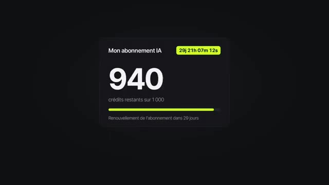
🔍 Agrandir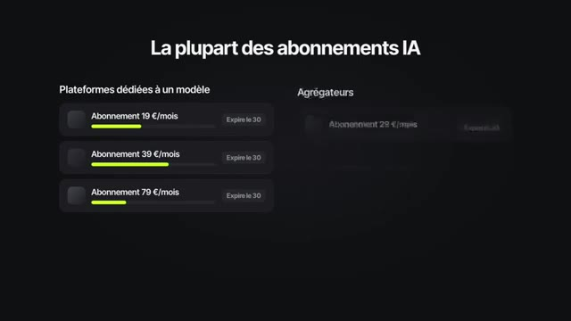
🔍 AgrandirCette API elle te donne accès à plusieurs modèles images et vidéos et tu payes seulement ce que tu génères. Niveau tarif c'est ultra compétitif. Si tu compares à ce qui se fait actuellement sur le marché. Et avec l'aide de Claude, on va construire une application locale installée sur ton ordinateur qui regroupe tous ces modèles au même endroit. Ça te permettra d'utiliser facilement tous les modèles IA compris dans la solution d'Xfield.
Interface & Outils : Présentation orale ou séquence sans interface partagée.
Contenu textuel & Code : Explications et conseils de création de contenu / IA.
Action / Démonstration : Démonstration et mise en contexte pratique.
De la création de la clé API jusqu'à la première génération, avec les étapes et les limites que j'ai rencontrées, je t'explique tout dans cette vidéo. Je suis sur le site spécial API d'Xfield. Pour y accéder, je te mets le lien en description et commentaire épinglé. J'ai créé un compte, je l'ai crédité de 10$. Un coup de feu rapide sur les prix des modèles.
Interface & Outils : Interface web de Higgsfield API (Dashboard et page Pricing)
Contenu textuel & Code : Menus Dashboard, Explore models, Quick start, Documentation, Pricing, API keys, Cashback, Top up, affichage du solde du compte (9.94$), des dépenses du jour et tableau comparatif des prix des différents modèles (Kling 3.0, Seedance, etc.).
Action / Démonstration : Le créateur présente le tableau de bord de son compte API, montre qu'il est crédité puis navigue vers la section des prix pour comparer les tarifs des différents modèles disponibles.
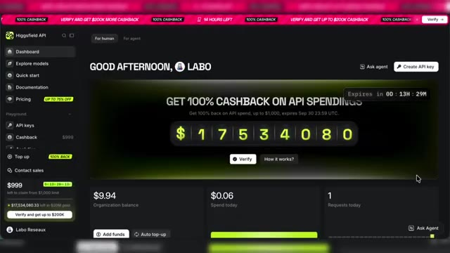
🔍 Agrandir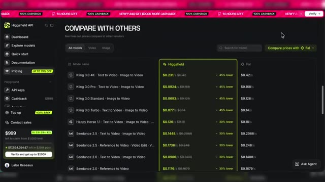
🔍 AgrandirOn voit ici les tarifs par seconde selon le modèle. Et une comparaison avec un autre acteur du marché. Et du coup la compétitivité de cette plateforme API d'Xfield. Point important sur le nombre de générations simultanées. Nous ici avec seulement 10$ de balance, on sera limité à 2 générations simultanées.
Interface & Outils : Présentation orale ou séquence sans interface partagée.
Contenu textuel & Code : Explications et conseils de création de contenu / IA.
Action / Démonstration : Démonstration et mise en contexte pratique.
Mais plus tu as de crédit sur ton compte, plus ça augmente. Par exemple, des 25$ de balance, on monte jusqu'à 10 générations simultanées. Si je me rends dans Explore Models, je vais avoir tous les modèles disponibles en API. Pour la vidéo, on a Seed Dance 2.5, on aura aussi Seed Dance 2.0, Kling 3.0, Minimax H3 ou encore WANA 3.0 Prime.
Interface & Outils : Higgsfield API (plateforme web en ligne)
Contenu textuel & Code : Menus Dashboard, Explore models, Quick start, Pricing, et miniatures des modèles vidéo (bytedance / Seeddance 2.5, higgsfield / Genjutsu, kling / Kling 3.0) avec tarifs et réductions.
Action / Démonstration : Navigation et présentation des différents modèles d'IA disponibles via l'API.
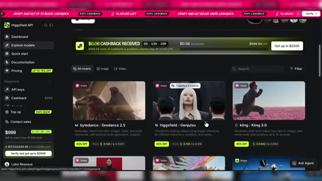
🔍 Agrandir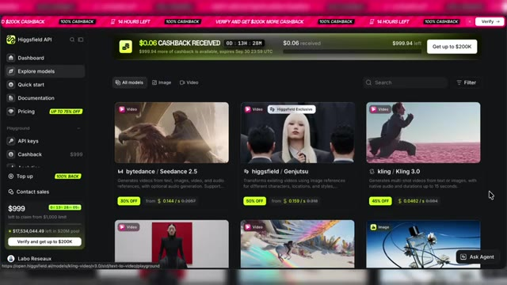
🔍 AgrandirEt on a aussi les modèles Maison d'Xfield avec Genjutsu ou encore Cinema Studio 4.0. On aura aussi accès aux modèles images, et là il y aura du Grok Imagine 2.0, Ideogram 4.0, Recraft 4.1 et plein d'autres, avec aussi les modèles Maison d'Xfield, Soul 2 ou encore le Marketing Studio Image.
Interface & Outils : Interface web de Higgsfield API (Explore models).
Contenu textuel & Code : Listes de modèles d'IA (MiniMax H3, Wan 3.0 Prime, Marketing Studio Image, Grok Imagine 2.0, Soul 2, Ideogram 4.0, Recraft 4.1, Soul Standard) avec indicateurs de prix et options de filtrage.
Action / Démonstration : Présentation et navigation à travers les différents modèles vidéo et image disponibles sur la plateforme Higgsfield API.
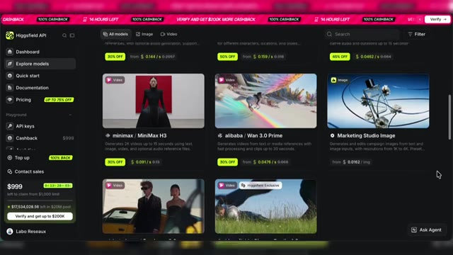
🔍 Agrandir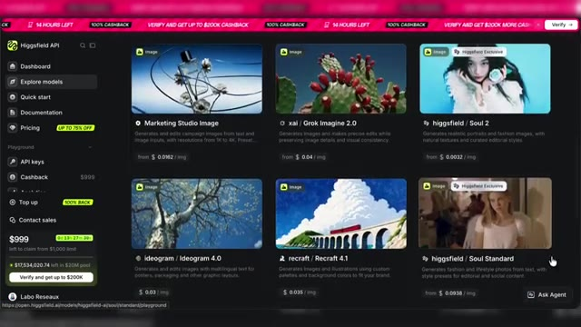
🔍 Agrandir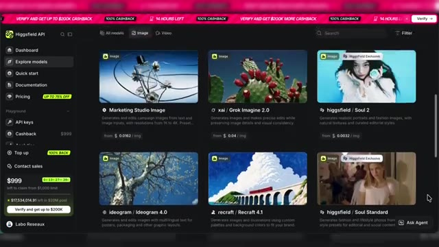
🔍 AgrandirLa liste est plutôt complète, dommage, on n'a pas accès aux modèles de ChatGPT et Google pour l'instant. Je ne sais pas si ça changera, la plateforme est encore toute récente, espérons que la liste de modèles s'enrichisse très vite. Et tous ces modèles, on peut les utiliser directement depuis le site. Par exemple, pour créer une image, je vais tester Grok Imagine 2.0.
Interface & Outils : Higgsfield API (site web / plateforme d'IA)
Contenu textuel & Code : Menus de navigation (Dashboard, Explore models, Quick start, API keys), vignettes de modèles (Marketing Studio Image, Grok Imagine 2.0), code TypeScript, et zone de saisie de prompt 'Input' avec le résultat visuel.
Action / Démonstration : Navigation dans la liste des modèles, sélection du modèle Grok Imagine 2.0 et consultation de son interface de test (playground).
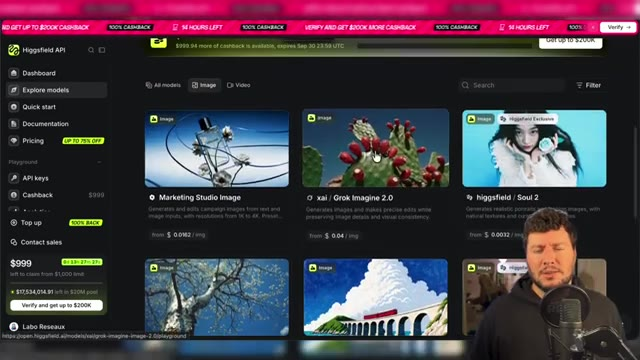
🔍 Agrandir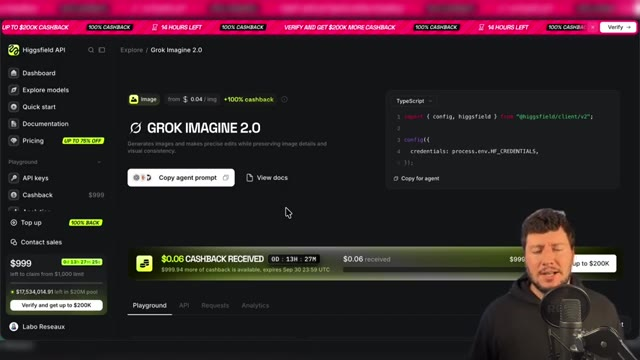
🔍 Agrandir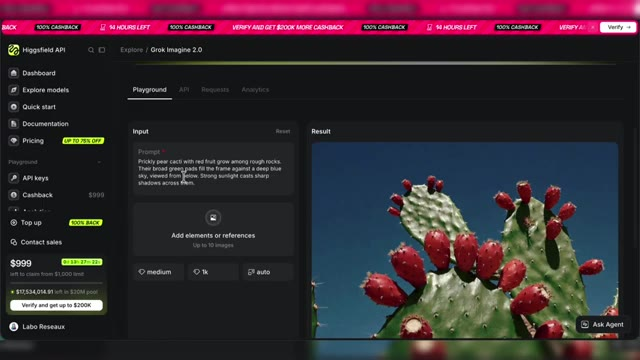
🔍 AgrandirJe le sélectionne et là dans la partie Playground, je vais avoir une barre de prompt. Je vais pouvoir indiquer mon prompt et faire mes réglages, puis générer. J'ai d'ailleurs le prix qui s'affiche sur le bouton de génération. Voilà mon résultat. A noter, tu retrouveras toutes les générations sur l'onglet Request du modèle. Toujours dans les onglets, tu as aussi un onglet API qui te donne accès à la doc API du modèle et aussi une commande spécifique Copy Agent Prompt.
Interface & Outils : Interface web de Higgsfield API (Playground et onglet API).
Contenu textuel & Code : Barres de prompt, boutons de réglages, affichage du prix de génération ($0.06), et onglets Playground, API, Requests, Analytics.
Action / Démonstration : Le créateur montre comment saisir un prompt, configurer les réglages de génération et consulter les détails du modèle et de l'API.
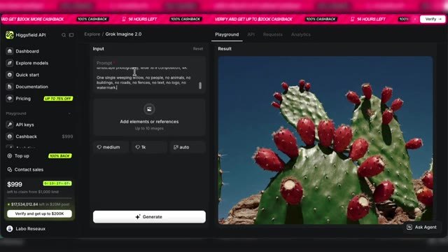
🔍 Agrandir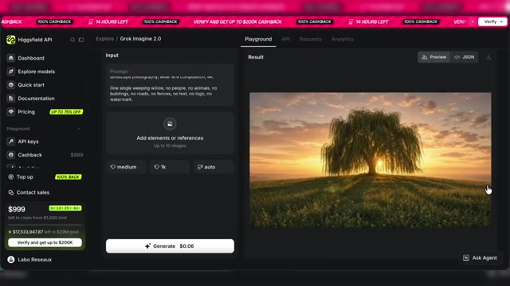
🔍 Agrandir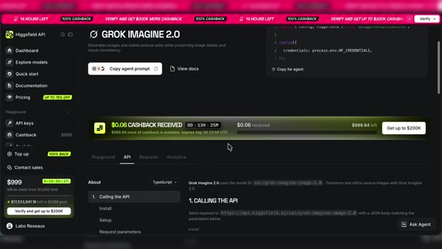
🔍 Agrandirqui te permet de copier-coller le prompt pour paramétrer l'API du modèle via un agent. Nous, on ne va pas le faire. On utilisera plutôt une autre commande pour donner d'un seul coup tous les modèles à Cloud qui nous préparera une application. Avant ça, je te montre aussi un modèle vidéo depuis la plateforme. Donc je sélectionne dans ma liste de modèles disponibles Seedense 2.5.
Interface & Outils : Dashboard de Higgsfield API, navigateur web.
Contenu textuel & Code : Textes promotionnels 'Get 100% Cashback on API Spendings', menu de sélection des modèles de génération (Text to Video, Image to Video), et code d'intégration TypeScript avec le bouton 'Copy agent prompt'.
Action / Démonstration : Le créateur navigue sur la plateforme Higgsfield API et explore le modèle Seedance 2.5 pour montrer les options de génération et le code d'intégration.
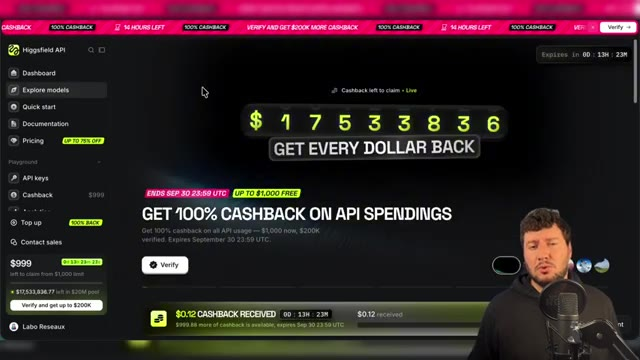
🔍 Agrandir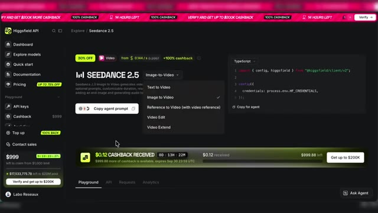
🔍 AgrandirTu vois, j'ai aussi la possibilité de choisir les déclinaisons du modèle selon l'usage. Là, je vais utiliser en image to video. Et pareil, je peux générer directement depuis le site ma vidéo en utilisant mes crédits API. Bon, même si l'utilisation des modèles depuis le site est possible, ce n'est pas forcément le plus agréable. Je te conseille de te rendre dans l'onglet Quick Start.
Interface & Outils : Site web Higgsfield API (Seedance 2.5)
Contenu textuel & Code : Menu Playground, options Input avec champ de texte, Start/End frame, Generate Audio, durée (10s), résolution (720p), et affichage du résultat vidéo.
Action / Démonstration : Le créateur montre l'utilisation du mode Image-to-Video sur la plateforme et commente l'interface.
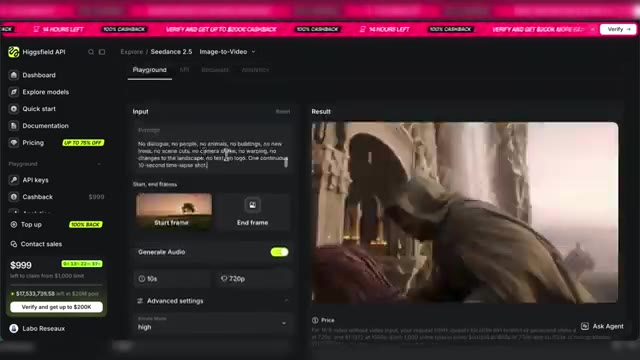
🔍 Agrandir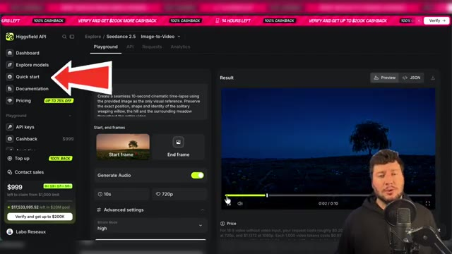
🔍 AgrandirEt tu vas copier ce prompt avec le bouton Copy Prompt Agent. Je vais ensuite ouvrir Cloud Code via l'application. Alors moi ici, j'utilise l'application Cloud Code, mais si tu es un utilisateur de chat GPT, tu peux utiliser Codex. Claude va me poser quelques questions supplémentaires. Je vais l'orienter en lui demandant d'installer l'application en local.
Interface & Outils : Navigateur web (site Higgsfield API) et application de bureau Claude Code.
Contenu textuel & Code : Documentation technique, instructions de migration d'API, prompts textuels complexes et questions interactives de l'agent IA concernant les dépendances (Node.js, npm, pnpm).
Action / Démonstration : Le créateur montre la copie d'un prompt d'agent depuis une API, puis bascule sur l'application Claude Code pour configurer et installer l'environnement de développement nécessaire.
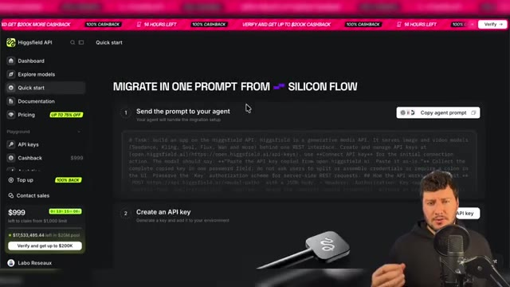
🔍 Agrandir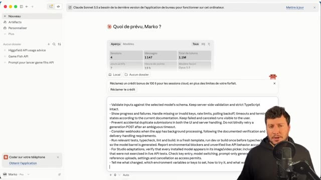
🔍 Agrandir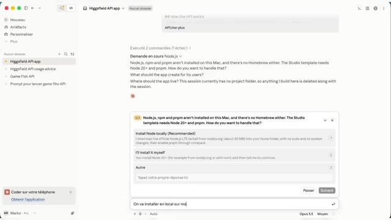
🔍 AgrandirOn va aussi lui demander de créer un nouveau dossier sur notre bureau pour accueillir l'application. Et je lui ai aussi précisé que je voulais tous les modèles de disponibles dans mon application. Donc tous les modèles vidéo et tous les modèles images disponibles via l'API d'Xfield. Et c'est parti, on va laisser Claude faire le boulot et on reviendra dans pas longtemps.
Interface & Outils : Présentation orale ou séquence sans interface partagée.
Contenu textuel & Code : Explications et conseils de création de contenu / IA.
Action / Démonstration : Démonstration et mise en contexte pratique.
Quelques instants plus tard, j'ai donc mon application de prête. Je vais la lancer. Elle est assez simple, mais on voit bien la liste complète des modèles vidéo et images. Bon, on pourrait sûrement mieux organiser ça. Et justement, ce qui est bien avec notre application, c'est qu'on va pouvoir demander à Claude de faire des ajustements et des modifications.
Interface & Outils : Application web "Atelier" (interface de génération d'images et vidéos par IA).
Contenu textuel & Code : Menus de sélection de modèles (Seedance 2.0 Fast, Kling 3.0 Turbo, Kling 3.0 4K, etc.), champ de texte "Describe the scene you imagine...", bouton "GENERATE".
Action / Démonstration : Le créateur navigue dans l'interface de son application et explore la liste déroulante des différents modèles vidéo et image disponibles.
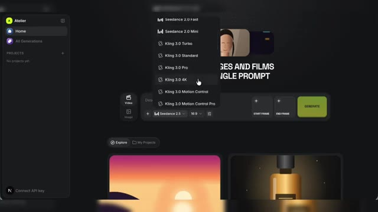
🔍 Agrandir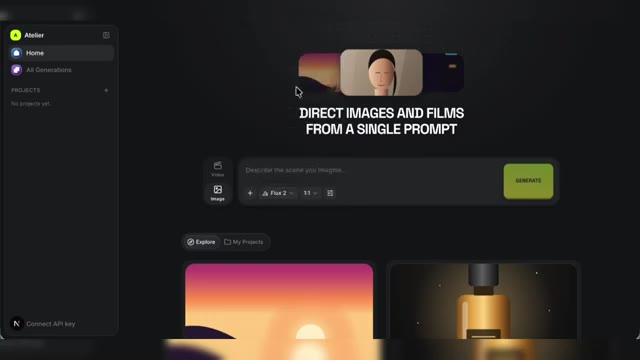
🔍 AgrandirOn va voir ça dans un petit moment, mais avant, mon application, elle n'est pas encore connectée à l'API d'Xfield. Donc là, je vais me rendre en bas à gauche. J'ai un bouton Connect API que Claude m'a inclus dans l'application. Je clique dessus, je suis redirigé vers la plateforme API d'XField. Cette fois je clique sur le bouton Create API Key.
Interface & Outils : Interface web de la plateforme Higgsfield API (mode sombre).
Contenu textuel & Code : Menu latéral (Dashboard, Explore models, Quick start, Documentation, Pricing, API keys...), un encadré explicatif avec du code/texte de tâche, et une section "2. Create an API key" avec une illustration de clé et un bouton "Create API key" pointé par une flèche rouge.
Action / Démonstration : Le créateur montre la page de création de clé API sur la plateforme Higgsfield pour connecter son application.
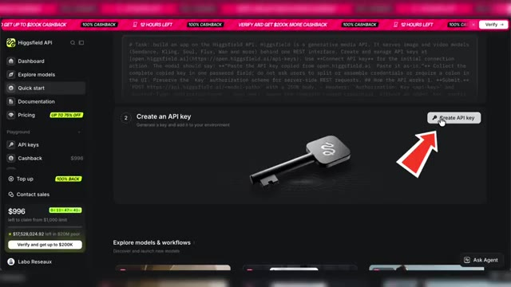
🔍 AgrandirJe donne un nom à mon API. On peut aussi mettre une date d'expiration. Et je n'ai plus qu'à copier et coller ma clé API dans mon application en local pour pouvoir utiliser tous les modèles IA. On va faire un test avec le modèle Flux 2. Et on a notre résultat, ça marche. On va tester maintenant un modèle IA vidéo. Alors là j'ai un truc qui me gêne dans la barre de prompt.
Interface & Outils : Dashboard de gestion API et interface web de génération d'IA (Atelier / Higgsfield).
Contenu textuel & Code : Menus "Create API key", "Enter name", champ de saisie de clé API masquée, prompt textuel et options de sélection du modèle Flux 2.
Action / Démonstration : Le créateur crée une clé API, l'insère dans l'application locale et configure un test de génération avec le modèle Flux 2.
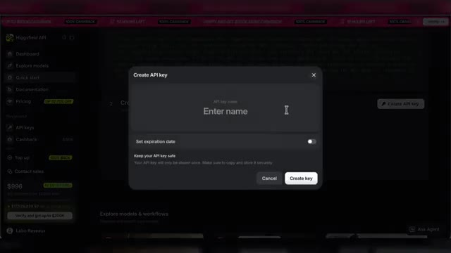
🔍 Agrandir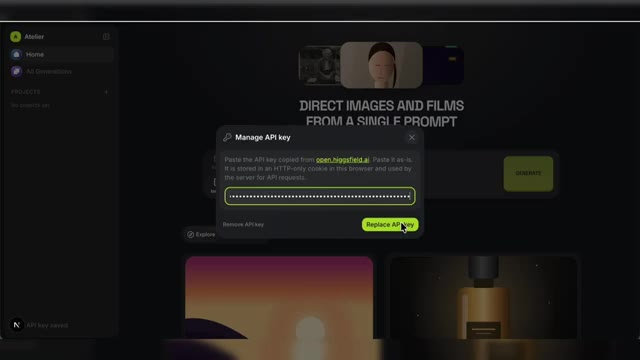
🔍 Agrandir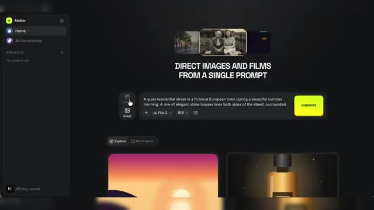
🔍 AgrandirJe ne peux pas scroller pour voir mon texte. Mais pas grave, comme je te l'ai dit, on va pouvoir personnaliser et améliorer notre application avec l'aide de Claude. Donc là, je vais simplement demander à Claude, peux-tu améliorer l'interface en ajoutant un curseur latéral, une barre latérale pour descendre dans la barre de prompt ? Bon, j'espère qu'il va comprendre ce que je lui ai demandé. Je relance l'application.
Interface & Outils : Interface de Claude (assistant IA conversationnel)
Contenu textuel & Code : Texte du prompt saisi : 'peux tu améliorer l'interface en ajoutant un curseur latéral pour descendre dans la barre de prompt' et explications textuelles de l'assistant.
Action / Démonstration : Le créateur demande à l'assistant Claude d'apporter une modification à l'interface de l'application.
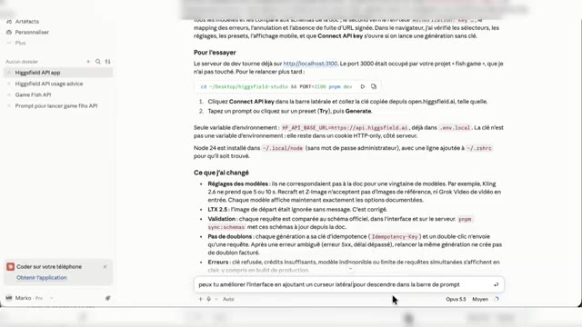
🔍 Agrandir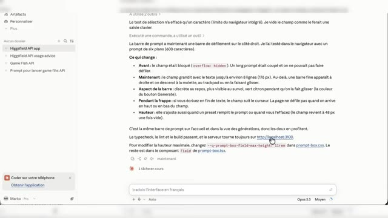
🔍 AgrandirEt super, il m'a fait les modifications demandées. C'est beaucoup mieux comme ça. Je vais pouvoir tester Seedense 2.5 avec une image en référence. En plus c'est cool, je peux aller directement chercher cette image de référence dans mes assets générés. C'est super, l'application fonctionne bien avec tous les modèles. C'est une version simplifiée, mais comme on l'a vu, il est tout à fait possible de la personnaliser à l'aide de Cloud pour avoir une application parfaitement adaptée à tes usages.
Interface & Outils : Application web de génération vidéo IA (Seedance 2.5) avec panneau latéral et zone de prompt.
Contenu textuel & Code : Prompt en anglais pour créer un time-lapse saisonnier, sélection du modèle Seedance 2.5, format 16:9, et détails de génération.
Action / Démonstration : Le créateur lance une génération vidéo avec image de référence et examine le résultat final.
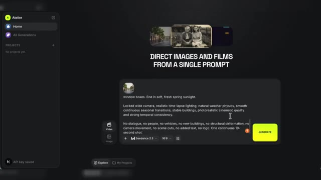
🔍 Agrandir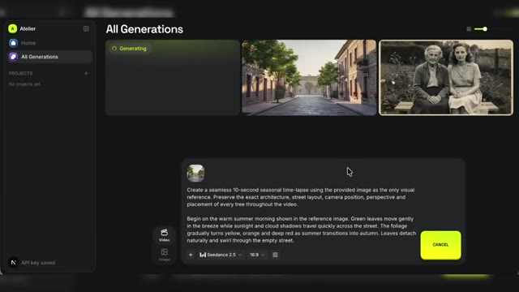
🔍 Agrandir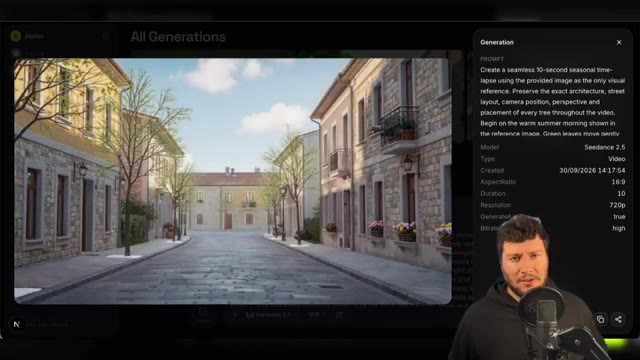
🔍 AgrandirAlors est-ce que l'utilisation d'Xfield en API rend forcément l'utilisation d'un abonnement inutile ? Pour moi, non. Déjà parce que comme on l'a vu, même si le service d'API d'Xfield est très complet, il moque encore pour l'instant l'accès à quelques modèles, notamment ceux de Google et ChatGPT. Mais aussi parce que selon tes besoins et la formule choisie, les abonnements peuvent rester une meilleure solution.
Interface & Outils : Interface vidéo de la chaîne YouTube 'Labo Des Réseaux' avec des infographies animées.
Contenu textuel & Code : Textes : 'L'API rend-elle l'abonnement inutile ?', noms de modèles IA (Seedance 2.5, Genjutsu, Kling 3.0, MiniMax H3, Wan 3.0 Prime, Marketing Studio, Seedance 2.0, Cinema Studio), et balance comparative 'API' vs 'Abonnement'.
Action / Démonstration : Le créateur illustre par des graphiques animés la comparaison entre l'utilisation d'une API et un abonnement classique.
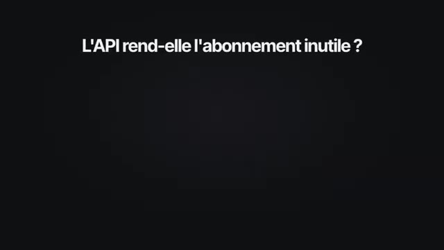
🔍 Agrandir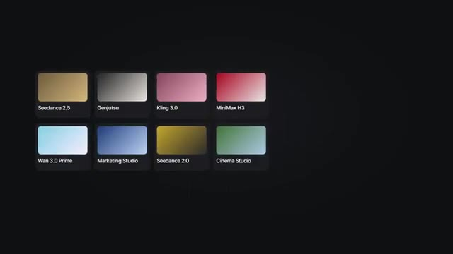
🔍 Agrandir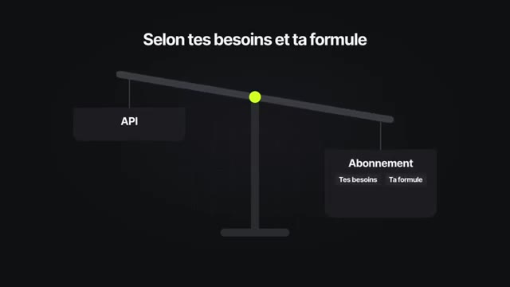
🔍 AgrandirPar exemple, via certaines offres, tu as un accès illimité à certains modèles et avec un engagement longue durée, tu peux aussi avoir des tarifs intéressants sur tes générations. Si tu sais que tu vas consommer chaque mois tous tes crédits et que les modèles inclus correspondent à ton activité, un abonnement reste simple, prévisible et potentiellement rentable.
Interface & Outils : Écran de montage vidéo ou infographie textuelle.
Contenu textuel & Code : Texte affiché : "SIMPLE. PRÉVISIBLE."
Action / Démonstration : Le créateur illustre visuellement les arguments clés abordés dans sa voix off concernant la simplicité et la prévisibilité des abonnements.
Pour moi, le passage par API, c'est une solution plus intéressante à étudier si tu travailles par projet. Par exemple, si tu as besoin de produire énormément d'images et de vidéos pendant quelques jours, puis de ne rien générer pendant plusieurs semaines après. C'est aussi pratique pour tester différents modèles avant de choisir lequel tu intégreras définitivement à ton workflow.
Interface & Outils : Interface de présentation de modèles d'IA avec superposition vidéo du présentateur.
Contenu textuel & Code : Titre : "Tester plusieurs modèles avant de choisir". Cartes de modèles : Seedance 2.5 (sélectionné, "Intégré à ton workflow"), Kling 3.0, MiniMax H3, Wan 3.0 (mention "même prompt").
Action / Démonstration : Le présentateur explique comment il est possible de tester divers modèles d'IA avant d'intégrer le choix définitif dans son workflow.
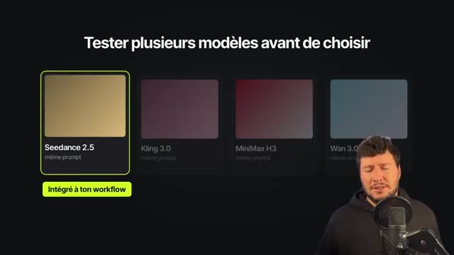
🔍 AgrandirAttention sur ce dernier point si tu utilises une application en local, comme dans l'exemple de cette vidéo. ça veut dire qu'il faudra aussi la mettre à jour lorsqu'un nouveau modèle sera disponible. Point intéressant dans cette vidéo, on a utilisé l'API pour la génération de vidéos et d'images et on a utilisé une clé API générale XFile regroupant tous les modèles disponibles.
Interface & Outils : Application locale "Mon studio IA", interface de gestion de modèles et schéma conceptuel d'API.
Contenu textuel & Code : Texte "Une app locale se met à jour à la main", vignettes de modèles (Seedance 2.5, Genjutsu, Kling 3.0, MiniMax H3, Wan 3.0 Prime, Marketing Studio, Cinema Studio, Nouveau modèle), schéma "Clé API générale" (tous les modèles) connectée aux différents services.
Action / Démonstration : Explication par le créateur de la mise à jour manuelle des applications locales et de l'utilisation d'une clé API générale pour l'accès aux modèles de génération vidéo et image.
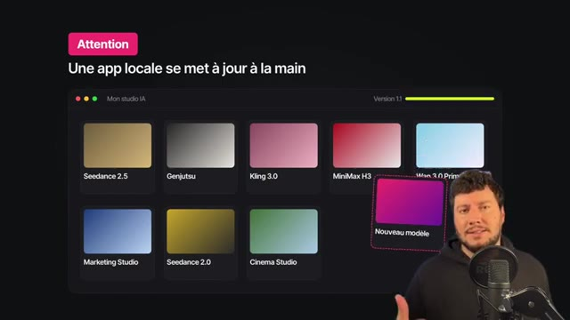
🔍 Agrandir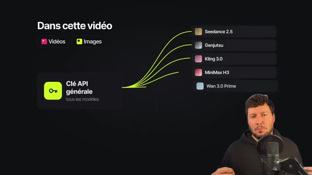
🔍 AgrandirMais on peut aller plus loin et aussi utiliser individuellement les API de modèles pour la création d'applications spécifiques. Si tu as une idée de business autour de la génération d'images ou de vidéos IA, L'utilisation des API avec les modèles présents sur la plateforme API Xfield, c'est une bonne solution. Pour tester le service API d'Xfield, le lien est en description et en commentaire épinglé.
Interface & Outils : Dashboard de la plateforme API Higgsfield.
Contenu textuel & Code : Menus de navigation (Dashboard, Explore models, Quick start, Documentation, Pricing, API keys), bannières promotionnelles de cashback, cartes de modèles de génération vidéo (Bytedance Seedance 2.5, Higgsfield Genjutsu, Kling) et le présentateur en bas à droite.
Action / Démonstration : Le présentateur présente la plateforme API Higgsfield pour la création d'applications spécifiques basées sur l'IA.
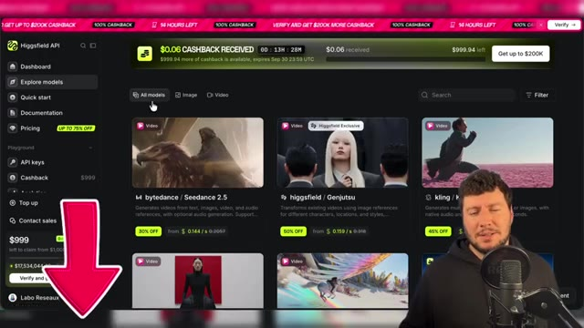
🔍 AgrandirMerci et à bientôt sur le Labo des Réseaux.
Interface & Outils : Navigateur web affichant la plateforme Higgsfield API.
Contenu textuel & Code : Catalogue de modèles d'IA (bytedance / Seedance 2.5, higgsfield / Genjutsu, kling / Kling 3.0, minimax / MiniMax H3, alibaba / Wan 3.0 Prime), menu latéral avec Dashboard, Explore models, Quick start, Documentation, Pricing, API keys, Cashback, Top up, Contact sales. Présence d'une flèche rose pointant vers le bas.
Action / Démonstration : Le présentateur conclut la vidéo en s'adressant aux spectateurs face caméra.
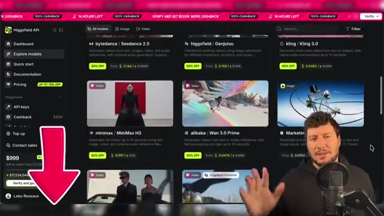
🔍 Agrandir